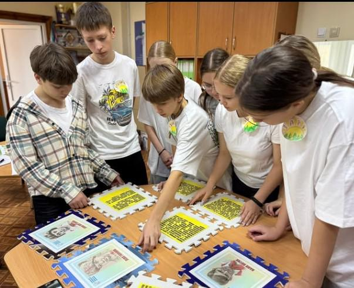
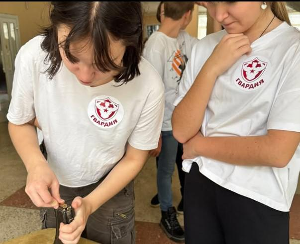
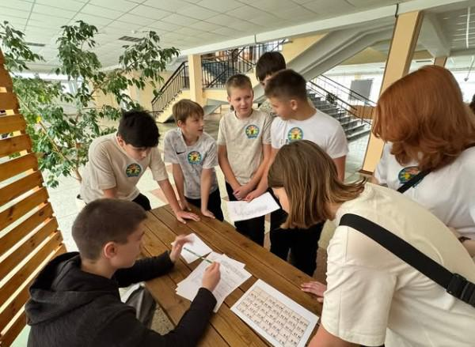
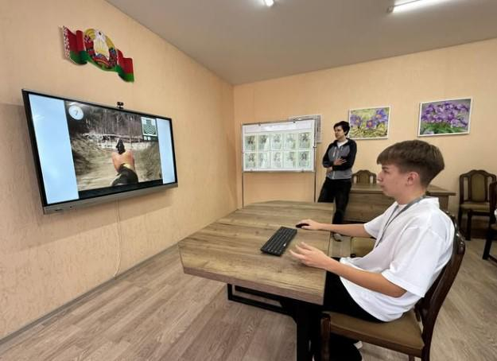
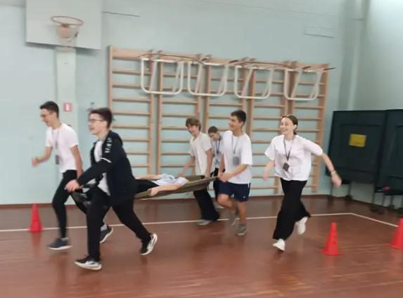
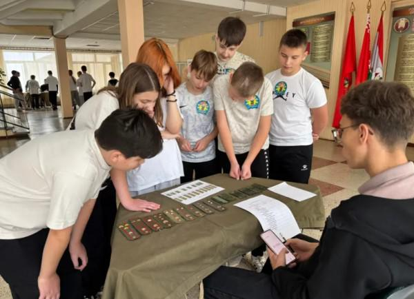
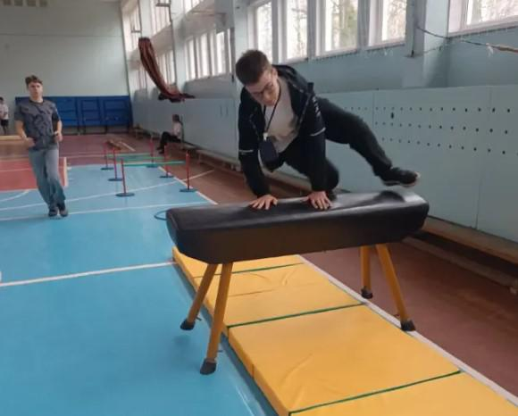
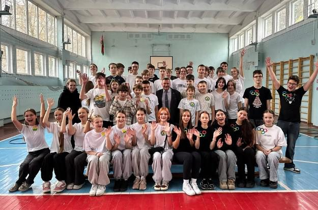

ВОЕННО-ПАТРИОТИЧЕСКАЯ ИГРА «ЗАРНИЦА»
1 ноября в нашей гимназии состоялся дружинный этап Республиканской спортивно-патриотической игры «Зарница». Это мероприятие – больше, чем просто соревнование. «Зарница» служит живой связью между поколениями, напоминая нам о героическом прошлом и воспитывая уважение к истории нашей страны.
В игре приняли участие пять команд учащихся 7-8 классов. Ребят ждали разноплановые испытания, проверяющие не только физическую подготовку, но и эрудицию, сплочённость, а также знание военно-исторического наследия.
Команды прошли через ряд увлекательных станций:
«Защитники Родины» – интеллектуальная викторина, где участники продемонстрировали знания об исторических сражениях и героях Отечества;

«Страницы истории» – место, где пионеры проявляют смекалку, разгадывая военные ребусы и вспоминая подвиги пионеров героев.

«Полоса препятствий» – испытание на выносливость и ловкость, где каждый участник смог проявить свою физическую подготовку;

«Песни военных лет» – творческая станция, на которой команды вспоминали и исполняли известные песни времён Великой Отечественной войны;

«Меткий стрелок» – испытание на точность в интерактивном тире, которое требует максимальной концентрации и уверенности.

«Военная смекалка» – участники Зарницы продемонстрировали навыки снаряжения магазина автомата Калашникова и знание воинских званий.


Игра прошла в тёплой, дружеской атмосфере. Участники команд действовали как единое целое, воплощая девиз: «Один за всех, и все за одного!». Педагоги не остались в стороне: они активно поддерживали своих воспитанников, помогали в организации этапов и искренне переживали за каждую команду. Все команды проявили себя достойно, показав отличные результаты на каждом этапе. Главное же – ребята получили заряд бодрости и энергии, массу положительных эмоций, ценный опыт командной работы.
